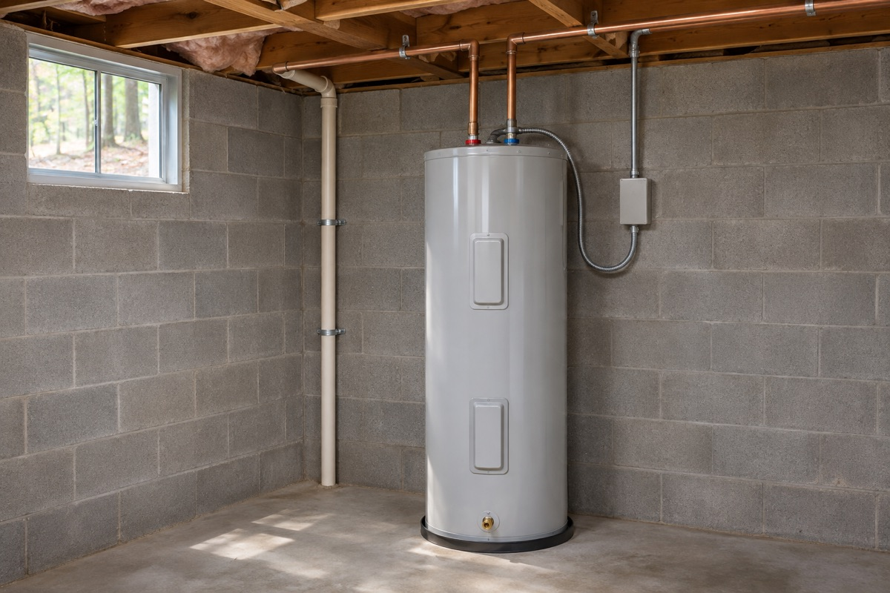

⌁
Leaks & repairs
For the drips and surprises you want handled with care.
Home should feel comfortable. Get a clear path forward when plumbing gets in the way.
LET’S GET STARTED → HERE WHEN HOME NEEDS A HAND.
HERE WHEN HOME NEEDS A HAND.For the drips and surprises you want handled with care.
Understand your options when hot water lets you down.
Everyday help for the things your home relies on.
Listen first. Explain clearly. Treat every home with care. This concept is designed for a local business with a warm, approachable personality.
No customer stories or business credentials are invented in this sample.
From a dripping faucet to a water heater that has stopped working, a local plumber can help you understand the issue and decide what to do next. Explore a sample of common residential plumbing services below.
Get help diagnosing leaks, worn valves, running toilets, low pressure, and other common plumbing problems in the home.

Discuss fixture repairs and replacement for kitchens, bathrooms, laundry areas, and other spaces.

Consider repair or replacement options for a water heater that is leaking, inconsistent, or no longer heating.
Talk through a slow or blocked drain and the appropriate next step for clearing it.
Investigate visible leaks, unexpected moisture, and plumbing lines that may need repair.
Address a running toilet, leaks around a fixture, flushing issues, or a planned replacement.
Discuss a jammed, leaking, or aging kitchen disposal and available options.
Have unusual water pressure or a suspected valve problem assessed before choosing a fix.
Plan plumbing changes for a kitchen, bathroom, or laundry update with the contractor.
This example service area shows how a local plumbing business could describe the communities it serves. A real company should publish only the locations it actually covers.
Service coverage, availability, licensing, pricing, and capabilities are examples to confirm with the real business before publication.
Share what is happening, where the problem is, and the best way to reach you.
Confirm the service area, availability, and whether an onsite visit is needed.
Ask about the proposed work, estimated costs, timing, and any warranty before proceeding.
This demo illustrates repairs, water heaters, fixtures, drains, leak concerns, and renovation work. A real company should replace this list with services it actually provides.
Contact the business with your town or ZIP code. Service boundaries and scheduling availability vary by company.
Ask how the company handles estimates, diagnostic fees, and approval. Some work requires an onsite assessment before a firm price can be given.
If it is safe, turn off the relevant water supply and contact a qualified plumber. For an immediate safety emergency, contact the appropriate emergency services.
Emergency availability varies. A real business should replace this sample answer with its actual hours and response process.
Fictional website concept by Gombey Tech. Images are illustrative, and the services and locations shown are examples rather than claims about a real plumbing company.
This fictional demo does not accept service requests.
EXPLORE SERVICES